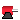

Icons for MultiBody package
Extends from Modelica.Icons.IconsPackage (Icon for packages containing icons).
| Name | Description |
|---|---|
| Surface | Surface icon |
|  MotorIcon | Icon of an electrical motor. |
Surface icon
Model Surface defines a moveable, parametrized surface in 3-dim. space that is used for animation. This object is specified by:
The parameter values (u,v) are given by the ordinal numbers of the corresponding control point in u- or in v-direction, respectively. The surface is then defined by the replaceable function "surfaceCharacteristic" with the interface partialSurfaceCharacteristic that returns the x-, y-, z- coordinate of every control point in form of 3 positional arrays and an optional color array, if every control point shall have a different color:
Real X[nu,nv], Y[nu,nv], Z[nu,nv], colorArray[nu,nv];
Models Torus
and VoluminousWheel
demonstrate how new visualizer objects can be constructed with the Surface model.
The direct usage of the Surface model, as well as of the Torus and the VoluminousWheel models, are demonstrated with example
Examples.Elementary.Surfaces.
Icon of an electrical motor.
Icon of an electrical motor model.
Automatically generated Fri Oct 02 11:08:16 2015.